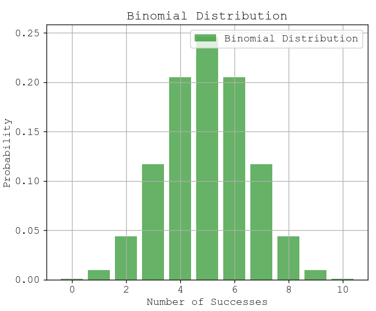

Example Data
Suppose we flip a fair coin 10 times. Each flip has:
- Two possible outcomes: Heads (H) or Tails (T)
- Probability of getting Heads (p) = 0.5
- Probability of getting Tails (q) = 1 - p = 0.5
The number of heads in 10 flips follows a binomial distribution.
1. Probability Calculation
Q: What is the probability of getting exactly 6 heads in 10 flips?
Using the Binomial Probability Formula:
P(X = k) = C(n, k) * p^k * (1 - p)^(n - k)
Where:
- n = 10 (total trials)
- k = 6 (successes - heads)
- p = 0.5 (probability of heads)
First, compute the binomial coefficient:
C(10, 6) = 10! / (6!(10-6)!) = 210
Now, calculate the probability:
P(X = 6) = 210 * (0.5)^6 * (0.5)^4
= 210 * (0.015625) * (0.0625)
= 0.2051
So, the probability of getting exactly 6 heads in 10 flips is 20.51%.
2. Visual Representation
The binomial distribution for 10 flips of a fair coin would look like:
📊 Probability Mass Function (PMF) Representation

Above is Binomial Distribution.
- The most probable outcomes are around 5 heads (mean of distribution).
- The distribution is symmetric since p = 0.5.
- Probabilities decrease as we move towards extreme values (0 or 10 heads).
3. Real-World Applications in AI
- A/B Testing: Used to measure success rates in experiments.
- Predicting customer behavior: Probabilities of purchase decisions.
- Machine learning classification: Bernoulli trials for modeling binary outcomes.
Would you like a Python code snippet to visualize this? 🚀